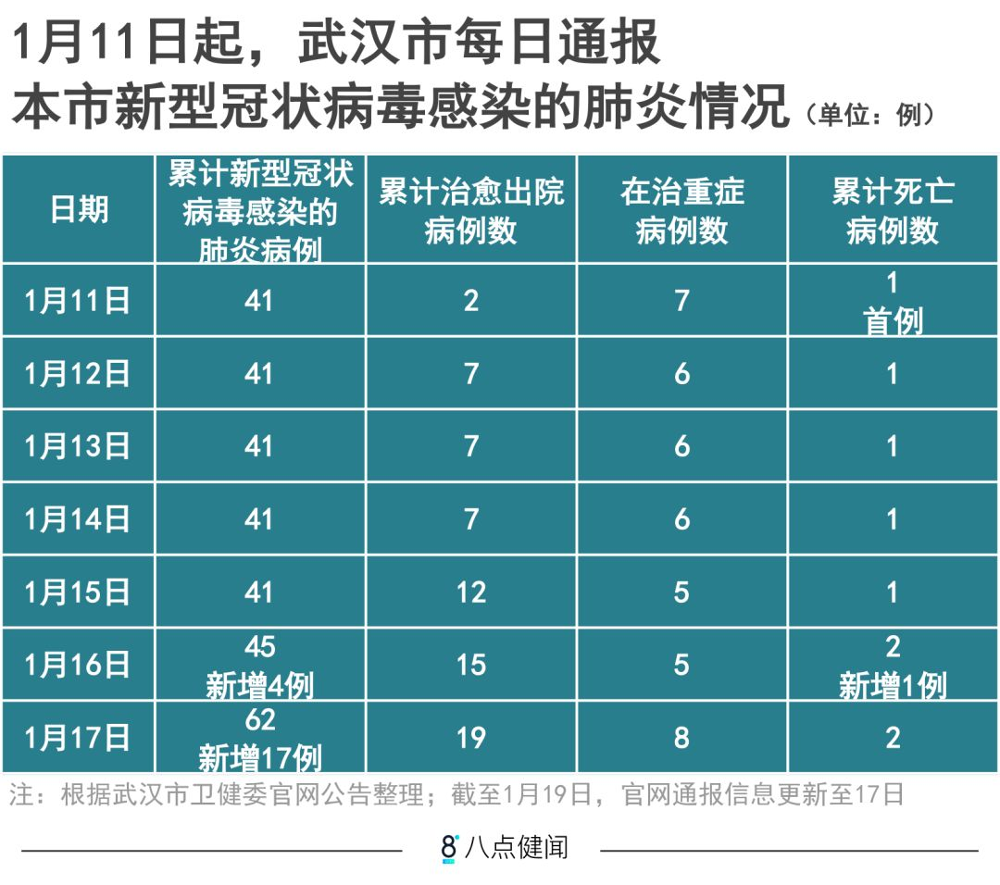
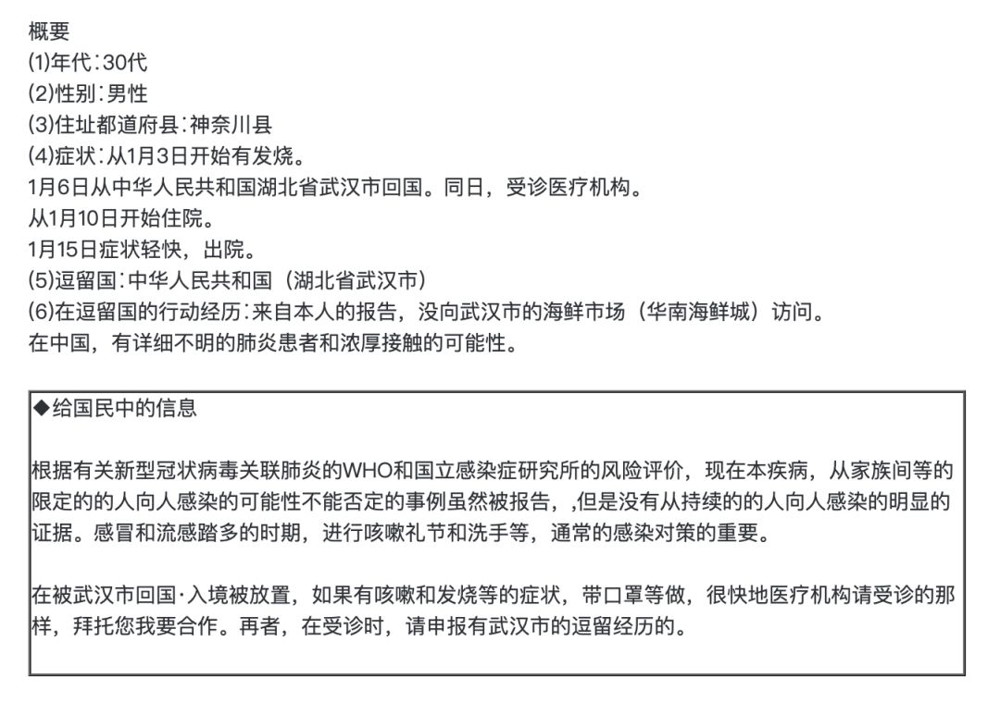
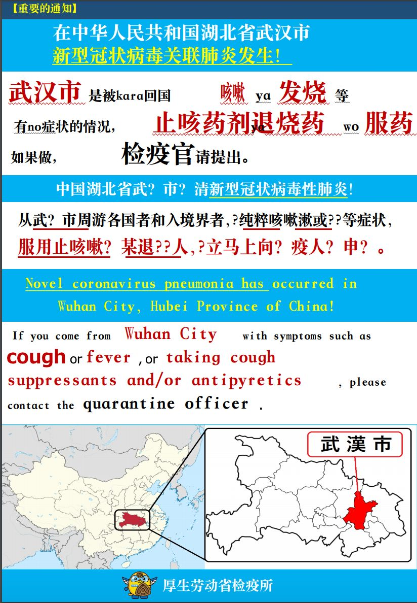

不明原因肺炎忽现
原文链接 备份链接 2019年末，一场“不明原因”肺炎袭击湖北武汉。它由一种新型冠状病毒导致，而“冠状病毒”一词，唤醒了人们对16年前另一场影响深远的“不明原因肺炎”的记忆。中国的疾控系统再度面临检验。 2020年1月14日，世界卫生组 …


武汉肺炎新的确诊病例突然增加了。1月17日新增17例，16日新增4例。
泰国和日本出现三例确诊病例，中国香港、越南、新加坡等地出现了疑似病例。
但内地在武汉之外没有报告，很可能是其他地区没有对该病毒进行检测。这种情况也许会发生变化。
相比SARS，新冠状病毒在致死率和传染性两方面都比较温和。
春运期间预计有30亿人次客流，外出如何预防新型冠状病毒？香港卫生署和WHO推荐的防护小贴士都可以参考。


△ 图片来源：yestone
武汉新型冠状病毒（1月12日，世界卫生组织将其命名为“2019新型冠状病毒”，简称2019-nCoV）感染的肺炎疫情还在延续，新认定的确诊病例突然增加了。
今天（1月19日）凌晨0点43分，武汉卫健委官网发布公告，1月17日，新增17例确诊病例。之前一天（1月16日），新增4例。
在这21例新增病例之前，1月3日以后，中国内地再没有出现过新增病例。
截至1月17日24时，武汉累计报告2019-nCoV肺炎病例62例，已治愈出院19例，在治重症8例，死亡2例。

△吴晔婷 制图
武汉之外，泰国和日本一共出现三例确认来自武汉的2019-nCoV肺炎病例，泰国的两例患者之间发病并无相关性。
另外，中国香港特区、越南、新加坡等地也出现了疑似病例，但均未确认和2019-nCoV有关。香港疑似病例最多，截至1月18日中午12点，共90例，其中76例已出院，未出院的均为1月14日后才报告的病例。
海外病例的新增，给内地即将踏上旅途的人们带来了疑惑，内地除武汉以外的城市都没有收到疑似病例的报告，这真实吗？
曾从事SARS研究的北京大学免疫学系副主任王月丹接受媒体采访时说，造成这一现象的原因很可能是中国其他地区没有对该病毒进行检测。
从目前已经公布的情况来看，2019-nCoV的危害性不算高，流行病毒学家、纽芬兰纪念大学终身教授王培忠表示，相比SARS，2019-nCoV在致死率和传染性两方面都比较温和。
尽管如此，毕竟不能排除有限人传人的可能，在没有官方信息的情况下，诸如“1月18日一家香港媒体报道称深圳和上海已经发现了疑似病例，消息尚未得到证实”，“急诊科医生穿上SARS期间的防疫防护服接诊”等等信息，还是有可能让春运中的旅客感到忐忑。
根据国新办的预测， 2020年春运期间，中国旅客发送量将达到约30亿人次。

△ 日本确诊病例的通告，图片来源：日本厚生劳动省官网截图
泰国日本共确认三例患者
美国开启最初级警戒
1月19日凌晨，武汉市卫健委官网连发两条公告。
公告称，在规范预检分诊和发热门诊工作的基础上，采用优化后的检测试剂盒，对全市发热门诊隔离治疗的不明原因肺炎病例进行采样监测，共检测出新型冠状病毒核酸阳性17例，患者发病日期在2020年1月13日前，其中重症病例3例。
而1月18日也是凌晨发布两条公告，1月16日新增4例，病情稳定，无危重症。这些患者的发病时间集中在1月5日至8日，均在华南海鲜市场休市以后。
此前，香港大学“新发传染性疾病国家重点实验室”主任管轶在接受媒体采访时表示，冠状病毒最长潜伏期是15天，内地自1月3日以来再没出现过新增病例。如果接下来几天不再出现新感染病例，可以判断此次疫情已经得到控制。
话音刚落，事与愿违。
18日的公告提到，泰国和日本各出现一例来自武汉的新型冠状病毒感染的肺炎病例，其中日本患者为一名居住在神奈川的30多岁男子，此前曾到过武汉，目前已经康复出院。泰国病例为一名61岁的武汉籍中国游客，女性，目前正在当地医院治疗当中，病情控制稳定，预计近日即可出院。
根据泰国公共卫生部官网1月17日的消息，泰国已经出现了第二例武汉肺炎病例，患者为一名74岁的中国女性，该乘客于1月13日从武汉飞赴曼谷，同样是在机场被检测出疑似症状后确诊感染新型冠状病毒。目前，该患者也在泰国当地接受治疗，病情稳定。
世界卫生组织西太平洋分部近日表示，对于中国以外地区确诊武汉肺炎病例并不感到意外，未来不排除会进一步扩大影响，并告诫各国做好疾病防控准备。但基于目前情况，世卫组织仍然不建议限制地区贸易与旅行。
周五（1月16日），美国疾病控制与预防中心宣布，纽约、旧金山和洛杉矶的机场将开始对来自武汉的乘客进行筛查，但警戒级别仍停留在1级，即采取通常的预防措施（按轻重程度共分3级，其中2级为警戒，采取加强预防措施； 3级为警告，避免不必要出行）。
美国国家免疫和呼吸系统疾病中心主任南希·梅索尼耶在新闻发布会上说，“积极主动并做好准备至关重要。”尽管美国可能在某个时候会出现病例，“我们认为目前病毒传播给公众的风险很低。”

△ 图片来源：日本厚生劳动省官网
2019-nCoV致死率和传染性均比SARS温和
2020年1月12日，世界卫生组织(WHO)收到中国分享的新型冠状病毒基因序列信息，并正式命名为“2019新型冠状病毒”（以下简称2019-nCoV）。世界卫生组织驻华代表表示，中国对此反应非常迅速。
截至目前，已经有两名确诊感染的患者死亡。
较早死亡的患者61岁，因呼吸衰竭、重症肺炎入院，同时患有腹部肿瘤及慢性肝病。2020年1月9日晚心跳停止。
后一名死亡患者69岁，于1月4日转入武汉市金银潭医院救治，入院时患有严重心肌炎；肾功能异常；多脏器功能受损严重；胸部CT提示肺纤维病灶及胸水、胸膜增厚，考虑有肺结核、胸膜结核疾病，于1月15日凌晨因抢救无效死亡。
可以看到，两名病人本身都患有多种严重的基础疾病，WHO曾在声明中指出，死亡患者有其他健康问题——也就是说，死亡患者可能是由于多种原因并发症引起，不能直接算作“新型冠状病毒肺炎会快速致死”。
2019-nCoV的危害性究竟有多大？
流行病毒学家、纽芬兰纪念大学终身教授王培忠表示，“学界判断一种病毒的危害性时，一般考虑两方面因素，一是致死率，二是传染性。相比SARS，2019-nCoV在这两方面都比较温和。”
王培忠早年参与过SARS的防治研究工作，根据他掌握的数据，SARS的致死率在13%左右。而目前的2019-nCoV，确诊45例（他接受采访时的数据），死亡2例，即便忽略死亡患者本身的健康因素，致死率也仅为4%左右。
从传染性来看，当年的SARS通过近距离飞沫传播，人传人的概率很高，出现了很多家庭、医院和社区聚集性感染的特征。而在之前确诊的45例患者中，只有一起家庭聚集性病例，为夫妻两人。其中，丈夫是华南海鲜批发市场的从业人员，先发病，妻子随后感染，但她否认有华南海鲜批发市场暴露史。
王培忠表示，即便如此，也不能确定2019-nCoV能够人传人。“不排除妻子在接触其它东西的情况下感染了病毒。就目前情况来看，最多也就是有限地人传人，所谓的有限人传人，是指原发病例传到第二代病人身上以后，第二代很难再传给第三代。”

△ 图片来源：yestone
为何内地其他地区没有报告疑似病例？
截至目前，武汉是内地唯一报告了2019-nCoV感染的肺炎患者数据的地区。对此，有人在网上戏称，2019-nCoV是“爱国病毒”，只在国外和武汉当地传播。

△吴晔婷 制图
北京大学免疫学系副主任王月丹曾经认为，原因很可能是其他地区没有对该病毒进行检测。
“无论是去香港还是国外，出境都会有检疫的要求，尤其是来自武汉的话。但国内无论是医院还是其他场所都没有收到要求，关注来自武汉的发热病人，而一般的感冒，患者本人也不会去检测冠状病毒。”
丁香诊所医生魏玮更是直言，“因为我们没能力给每个武汉周边呼吸道感染症状的居民做2019-nCoV检测。而其它国家可以用我们提供的病毒序列信息，给每个跟武汉有交集，甚至扩大范围到从中国入境的呼吸道感染患者做检测，并快速得出结论。”
世卫组织传染病建模合作中心17日发表了一篇报告，通过海外通报的感染者数量，结合疾病模型分析，推算出截至1月12日武汉市感染者的数量在427人到4471人之间，精确数字为1723人，远远高于目前的确诊人数。
香港大学公共卫生学院副教授朱华晨接受媒体采访时评论，报告所采用的建模测算思路没有问题，但准确性有待商榷，尤其是在已知参数较少的情况下，黑箱输出的最终结果可能会和实际情况存在较大差异。
世卫组织发言人则表示，推算数据不代表官方立场，但他们仍然欢迎此类分析，因为模型分析有助于他们为部分国家或地区提供更有针对性的防控建议和工具。
内地其他城市没有病例的情况可能很快就会发生变化了。
据香港媒体报道，深圳和上海有可能发现3例疑似病例，不过这个信息尚未得到证实。
而《财经》报道，内地部分医院已经启动了紧急排查工作。
近期在北京个别医院看感冒门诊的市民，会被医生要求多填多填一张单子——2019新型冠状病毒感染疑似观察病例门诊清单（暂行），单子共有三大内容：流行病学史（是否于近期到过武汉）、是否发热、以及呼吸道感染症状。如果同时符合这三类条件，将被列为“武汉新型病毒感染疑似观察病例”。
这张单子的出处，依据的是首都医学大学附属北京地坛医院感染中心近日制订出的一份“新型冠状病毒感染的肺炎诊疗方案（试行）”。
如果满足以上条件，医院就要报告给所在地的省级疾控中心，并采集病人痰液、咽拭子等呼吸道标本行病毒全基因组测序，判断是否与已知的新型冠状病毒高度同源。如果同源，再交由国家疾控中心复核后，由国家卫健委疫情领导小组下设的诊断组评估确认。
春节外出如何预防新型冠状病毒？
近日WHO发布了针对疑似2019-nCoV造成严重急性呼吸道感染的临床管理临时指南。不过对于大部分人来说，预防才是更值得注意的事项。
春节期间，不管是要去武汉的朋友，还是有亲朋好友从武汉来，都要密切做好预防措施。
香港卫生署为市民外游提供了详细的预防措施：
避免到访医院。如有必要到访医院，应佩戴外科口罩及时刻注重个人和手部卫生；
避免接触动物（包括野味）、禽鸟或其粪便；
避免到湿货街市、活家禽市场或农场；
避免近距离接触患者，特别是有急性呼吸道感染症状的患者；
切勿进食野味及切勿光顾有提供野味的食肆；
注意食物安全和卫生，避免进食或饮用生或未熟透的动物产品，包括奶类、蛋类和肉类，或食用可能被动物分泌物、排泄物（例如尿液）或产品污染的食物，除非已经煮熟、洗净或妥为去皮；
身处外地时，如身体不适，特别是有发烧或咳嗽，应戴上外科口罩，立即通知酒店职员或旅游领队，并尽快求诊；及
从外地回港后，若出现发烧或其他病征，应立即求诊，主动告诉医生最近曾到访的地方及有否接触动物；并佩戴外科口罩，以防传染他人。
复旦大学附属华山医院感染科翻译了WHO推荐的2019-nCoV防护小贴士，更直观。


△ 图片来源：WHO、华山感染
毛晓琼|撰稿
微信号：234379189
王吉陆|责编
微信号：wangjilu006


用了51个未上市的药械，救了253个病人，中国“医疗特区”该加速了

我们尊重原创版权，未经允许请勿转载。
授权转载
郑琪 微信号: 1281949389
商务合作
上海：leslee 13916263824
北京：Jessie 13911125922
线索爆料、意见反馈，加入核心读者社群
请扫码联系健闻君

让朋友们看到你也在看
↓↓↓
健闻毛晓琼
微信扫一扫赞赏作者 赞赏
长按二维码向我转账
受苹果公司新规定影响，微信 iOS 版的赞赏功能被关闭，可通过二维码转账支持公众号。
原文链接 备份链接 2019年末，一场“不明原因”肺炎袭击湖北武汉。它由一种新型冠状病毒导致，而“冠状病毒”一词，唤醒了人们对16年前另一场影响深远的“不明原因肺炎”的记忆。中国的疾控系统再度面临检验。 2020年1月14日，世界卫生组 …
原文链接 备份链接 武汉卫健委最新通报，“不明原因肺炎”已排除SARS和MERS，但病原体仍未明确。 武汉患者已增至59例，重症7例，均在接受隔离治疗，无死亡病例。 香港特区等地加强了对来自武汉人员的监测，香港每日公布疑似案例，最新 …
原文链接 备份链接 这一次的休市，几乎要使华南市场干货店老板曾嘉欣找不到生活的信念了。2019 年 11 月，因为一家卖辣椒等干货调料的商铺起火，曾嘉欣的商铺，以及铺子里 69 万的干货曾被付之一炬。借了贷款，用半个月的时间把商铺重新装 …
原文链接 备份链接 共27例病例，大多是武汉华南海鲜城经营户。7例病情危重，其余病情可控，有2例病情好转拟近期出院。 不明原因肺炎，是2003年SARS事件后，对SARS病例和人禽流感病例及其它传染性呼吸道疾病监测中用的概念。 …
原文链接 备份链接 正月二十二。 下雪了。昨晚风大雷响，今天便下起了雪。在武汉，下这样大雪的冬天也是不多。听说雷神山有几间病房的屋顶被掀开，可见昨夜的风有多大。希望病人能安稳转移，在大劫难中度过这个小的劫难。 今天的心情真是坏透了。 …